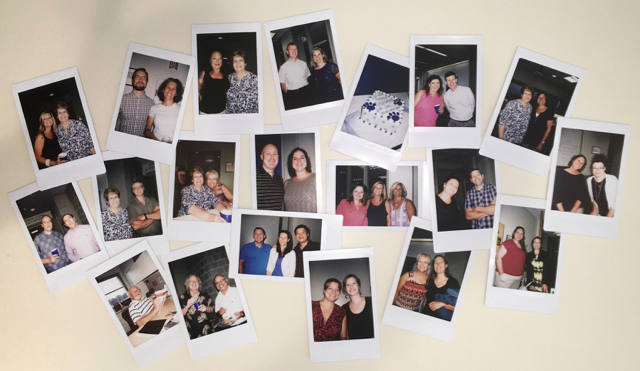

The College of EMS’ e-education community includes faculty members affiliated with the College’s five academic departments (Energy, Geography, Geosciences, Materials Science and Engineering, and Meteorology), as well as instructional design and development specialists, information technology personnel, support staff, and administrators.
The Institute's professional personnel consists of approximately 100 full-and part-time personnel, including a director, assistant director, administrative support staff, a comprehensive learning design team, and lead program faculty, as well as a large number of faculty course authors and instructors who represent the College’s academic departments.

Snapshots from Jan Moyer's retirement celebration, July 2016
Dutton Institute Personnel
The e-education community includes the Penn State faculty and staff members listed below. Links lead to personal pages, some of which are external to this site.
For simplicity’s sake, this page lists only those who hold official appointments through the Institute and program lead faculty.
Front Office Personnel
- Ann Taylor, Assistant Dean for Distance Learning and Director
- Tina Vancas, Administrative Manager
- Susan Spaugh, Administrative Coordinator
- Noelle Capparelle, Administrative Support Assistant
- Kary Isett, Administrative Support Assistant
Graduate Assistant
Grading Assistants
- Amy Avery
- Cassandra Schmick
- Craig Amey
- Eileen Kerhouant
- Martha Selig
- Susan Anderson
- Susan Wheeler
Learning Design Team
- Stevie Rocco, Assistant Teaching Professor and Director of Learning Design
- Jennifer Babb, Learning Designer
- Emily Baxter, Lecturer, Learning Designer
- Beth Bailey, Lecturer, Learning Designer
- Tim Bracken, Programmer/Analyst
- Matt Croyle, Programmer/Analyst
- Kay DiMarco, Multimedia Specialist
- Kim Crossman, Assistant Learning Designer
- Maggie Frederick, Assistant Learning Designer
- Marty Gutowski, Programmer/Analyst, Web Systems Administrator
- Megan Kohler, Lecturer, Learning Designer
- April Millet, Lecturer, Learning Designer
- Carl Schaad, Multimedia Specialist
- Maria Scalzi Wherley, Editor, Assistant Learning Designer
- Heidi Sporre, Web Production Assistant
- Jane Sutterlin, Lecturer, Learning Designer
- Mark Wherley, Learning Designer
Lead Program Faculty
- David Babb, Assistant Professor/Research Associate; Lead Faculty, Certificate Program in Weather Forecasting
- Todd Bacastow, Teaching Professor of Geography
- Tim Bralower, Professor of Geosciences; Lead Faculty, Certificate Program Earth Sustainability and Minor in Earth and Sustainability
-
Vera Cole, Associate Teaching Professor; Lead Faculty, B.A. in Energy Sustainability and Policy program; Instructor, EGEE 401, EME 444, and EME 466
- Seth Blumsack, Associate Professor of Energy Policy; Lead Faculty, Energy Business and Finance Minor; Instructor, EME 801
- Mark Fedkin, Assistant Teaching Professor; Option Leader for the iMPS-RESS Solar Energy Option
- Eliza Richardson, Associate Teaching Professor; Lead Faculty, M.Ed. in Earth Sciences program
- Anthony Robinson, Assistant Professor; Lead Faculty, Online Geospatial Education (Certificate & Master of GIS) programs
- Erich Schienke, Lecturer; Option Leader for the iMPS-RESS Sustainability Management and Policy Option; Lecturer, BIOET 533 and EME 805
Program Faculty
- Qassim Abdullah, Instructor
- Sim Aberson, Instructor, METEO 241
- Neyda Abreu, Associate Professor of Earth Sciences (Penn State Dubois); Instructor, EME 504
- Richard Alley, Professor
- Mohamed Amer-Chaaban, Instructor, AE 868
- Sridar Anandakrishnan, Professor
- Ryan Baxter, Associate Teaching Professor of Geography
- Matt Beaty, Instructor
- Dennis Bellafiore, Associate Teaching Professor of Geography
- Dave Bice, Professor
- Justine Blanford, Associate Teaching Professor of Geography
- Rob Brooks, Professor
- Neil Brown, Lecturer, Parks and People
- Bill Brune, Professor of Meterology; Author and Instructor, METEO 300
- Caroline Clifford, Author and Instructor, EGEE 439
- Stephen Corfidi, Instructor, METEO 361
- Mark Corson, Assistant Teaching Professor of Geography; Visiting Associate Professor (NW Missouri State); Instructor, GEOG 882
- Pete Croswell, Instructor
- Jim Detwiler, Assistant Teaching Professor of Geography
- David DiBiase, Assistant Teaching Professor of Geography
- Roman Engel-Herbert, Assistant Professor
- Semih Eser, Professor
- Maureen Feineman, Assistant Professor
- Kevin Furlong, Professor
- Brian Gaudet, Assistant Research Professor, METEO 469
- Adrienne Goldsberry, Assistant Teaching Professor of Geography
- Amy Griffin, Instructor
- Adrienne Gruver, Instructor
- Bill Groves, Associate Professor
- Mike Hardwig, Instructor, EARTH 501
- Stephen Handwerk, Assistant Teaching Professor of Geography
- David Hunger, Instructor, EBF 200
- Andy James, Author, BA 850
- Karen Jensen, Instructor, EGEE 120
- Dan Kasper, Instructor, EM SC 240 and EME 444
- Patrick Kennelly, Instructor
- Fritz Kessler, Associate Research Professor of Geography
- Allen Kimel, Assistant Professor
- Beth King, Assistant Teaching Professor of Geography
- Andy Kleit, Professor Energy and Environmental Economics
- Alex Klippel, Associate Professor
- Jeff Kohler, Professor
- JD Kronicz, Instructor
- Serguei Lvov, Professor
- Alan MacEachren, Professor, GEOG 160web
- Jonathan Mathews, Professor; Instructor, EGEE 101
- Dinah Maygarden, Instructor, EARTH 107
- Doug Miller, Professor
- Andrew Murdoch, Instructor,
- James O'Brien, Instructor
- Jarlath O'Neil-Dunne, Instructor
- Chris Palma, Senior Lecturer; M.Ed. in Earth Sciences program
- Todd Palmer, Senior Research Associate; Author and Instructor, MATSE 259
- Sarma Pisupati, Associate Professor; Instructor, EGEE 102
- Barry Posner, Instructor, E B F 200
- Sterling Quinn, Instructor
- Ron Redwing, Senior Lecturer
- Brandi Robinson, Lecturer of ESP; Adviser; Instructor, GEOG 432, GEOG 438W, EM SC 302, and EME 803
- Melissa Rock, Instructor, GEOG 128
- Elise Rubio
- Haley J. Sankey, Lecturer of ESP; Adviser; Instructor, EM SC 302, EGEE 299 and EGEE 495
- Ron Santini, Lecturer of Geography, GEOG 469
- Karen Schuckman, Assistant Teaching Professor of Geography
- Steve Seman, Lecturer; Instructor, METEO 003, METEO 241, METEO 361 and METEO 410
- Jim Sloan, Assistant Teaching Professor of Geography
- Erica Smithwick, Associate Professor
- Susan Stewart, Senior Research Associate; Instructor, EME 802, EGEE 438, AERSP 880, AERSP 886, AE 878
- Kevin Stofan, Instructor
- Farid Tayari, Instructor, EBF 200, EBF 301, EME 460
- Gregory Thomas, Assistant Teaching Professor of Geography
- Michael Thomas, Instructor
- Elizabeth Van Otten, Instructor
- George Van Otten, Instructor
- Jan Van Sickle, Instructor
- Jan Wallgrun, Instructor
- Tim White, Research Professor, Instructor, EARTH 530
- Michelle Zeiders, Assistant Teaching Professor of Geography